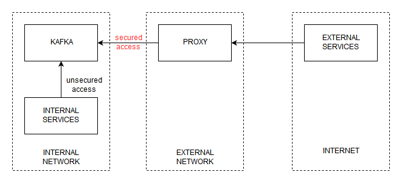

home / 2019.08.09 13:30 / apache spark / apache kafka / docker / spark streaming / security
This article is part of an investigation on connecting Apache Kafka with Apache Spark, with the twist that the two of them are in different clouds. In addition, the setup explored in this article will have the Kafka service in a private subnet, available to on-location services to interact with natively, but not accessible to services on the internet, like our Spark service. Our plan is to keep Kafka accessible to our internal services on the default, unsecured API, and to publish Kafka to internet services on a secured API, through a port-forwarding proxy. We'll implement the project and test it using docker.
There are several steps to this setup:
We'll start with a folder for each service in our network (ngnix is the proxy):
Create a Dockerfile inside the zookeeper folder and add the following to it:
FROM ubuntu
EXPOSE 2181
RUN apt-get update
RUN apt-get install -y wget
RUN apt-get install -y nano
RUN apt-get install -y net-tools
RUN apt-get install -y default-jre
WORKDIR /opt
RUN wget https://www-eu.apache.org/dist/zookeeper/zookeeper-3.5.5/apache-zookeeper-3.5.5-bin.tar.gz
RUN tar -xvzf *.tar.gz
RUN cp apache-zookeeper-3.5.5-bin/conf/zoo_sample.cfg apache-zookeeper-3.5.5-bin/conf/zoo.cfg
ENTRYPOINT apache-zookeeper-3.5.5-bin/bin/zkServer.sh start-foreground
It's a simple Zookeeper installation, a lot of hardcoded information in there. We start from an Ubuntu image and install some general tools (wget, nano, net-tools) and the default JRE. We next download a Zookeeper binary. You may want to update this to a newer version. Next, it's just a matter of extracting the archive and starting the zookeeper server.
We next want to start up a Kafka node, so we create a Dockerfile in the kafka folder and add the following to it:
FROM ubuntu
EXPOSE 9020
RUN apt-get update
RUN apt-get install -y wget
RUN apt-get install -y nano
RUN apt-get install -y net-tools
RUN apt-get install -y default-jre
WORKDIR /opt
RUN wget https://www-eu.apache.org/dist/kafka/2.2.0/kafka_2.11-2.2.0.tgz
RUN tar -xvzf *.tgz
COPY server.properties /opt/kafka_2.11-2.2.0/config/server.properties
ENTRYPOINT /opt/kafka_2.11-2.2.0/bin/kafka-server-start.sh /opt/kafka_2.11-2.2.0/config/server.properties
The start is the same as for the Zookeeper image, an Ubuntu image followed by some tools and the default JRE install. We also download the Kafka binary and extract it. Next we copy a server.properties file to the Kafka install location, and start the Kafka service. The server.properties file contains the following:
broker.id=0
num.network.threads=3
num.io.threads=8
socket.send.buffer.bytes=102400
socket.receive.buffer.bytes=102400
socket.request.max.bytes=104857600
log.dirs=/tmp/kafka-logs
num.partitions=1
num.recovery.threads.per.data.dir=1
transaction.state.log.replication.factor=1
transaction.state.log.min.isr=1
log.retention.hours=168
log.segment.bytes=1073741824
log.retention.check.interval.ms=300000
zookeeper.connect=zookeeper:2181
zookeeper.connection.timeout.ms=6000
group.initial.rebalance.delay.ms=0
offsets.topic.replication.factor=1
ssl.endpoint.identification.algorithm=
advertised.listeners=PLAINTEXT://localhost:9092
listeners=PLAINTEXT://0.0.0.0:9092
Important entries here are zookeeper.connect, which lets Kafka know where to find the zookeeper service, and the listeners and avertised.listeners entries, which define on what interfaces the Kafka service is listening on, and on what interfaces the Kafka service is advertising to its clients.
To start everything up, we need to create a docker-compose.yml file in the root of our project that contains the following:
version: '2'
services:
zookeeper:
build: ./zookeeper
ports:
- "2181:2181"
kafka:
build: ./kafka
ports:
- "9092:9092"
Then, open a shell in the root folder and run the following command:
docker-compose up -d
Docker will build the necessary images and start the kafka and zookeeper services defined in the docker-compose file. The kafka service will be accessible on localhost:9092. If you have a binary Kafka locally, you can run the console producer and consumer:
kafka-console-producer --broker-list localhost:9092 --topic test
kafka-console-consumer --bootstrap-server localhost:9092 --topic test --from-beginning
For this example, I am implementing the simplest security setup for Kafka, SASL plaintext, with hardcoded user/password in a Kafka configuration file and no certificates.
The first change to the Kafka service is a new configuration file named kafka_server_jaas.conf:
KafkaServer {
org.apache.kafka.common.security.plain.PlainLoginModule required
username="admin"
password="admin-secret"
user_admin="admin-secret"
user_alice="alice-secret";
};
This file defines the credentials that Kafka will accept, and will use when communicating with other nodes in the Kafka cluster. For this example we have the admin user, which is used for inter-Kafka communication, and another user named alice, with her own password.
Next, we update the server.properties file:
broker.id=0
num.network.threads=3
num.io.threads=8
socket.send.buffer.bytes=102400
socket.receive.buffer.bytes=102400
socket.request.max.bytes=104857600
log.dirs=/tmp/kafka-logs
num.partitions=1
num.recovery.threads.per.data.dir=1
transaction.state.log.replication.factor=1
transaction.state.log.min.isr=1
log.retention.hours=168
log.segment.bytes=1073741824
log.retention.check.interval.ms=300000
zookeeper.connect=zookeeper:2181
zookeeper.connection.timeout.ms=6000
group.initial.rebalance.delay.ms=0
offsets.topic.replication.factor=1
ssl.endpoint.identification.algorithm=
advertised.listeners=SASL_PLAINTEXT://localhost:9095, PLAINTEXT://localhost:9092
listeners=SASL_PLAINTEXT://0.0.0.0:9095, PLAINTEXT://0.0.0.0:9092
security.inter.broker.protocol=SASL_PLAINTEXT
sasl.mechanism.inter.broker.protocol=PLAIN
sasl.enabled.mechanisms=PLAIN
Here we have defined new listeners and advertised.listeners. Besides the default interface on port 9092, we have a secured interface on port 9095. The plan is to allow services inside the secured network to access Kafka on port 9092, without security, but expose Kafka on port 9095 to services outside the secured network. We also define security.inter.broker.protocol, the protocol that will be used by other Kafka nodes when they need to communicate with each other (for example to elect leaders). If this protocol is SASL_PLAINTEXT, the admin credentials will be used for inter-Kafka communication. We could also have this protocol as PLAINTEXT, which would configure the Kafka services to communicate on port 9092 without security.
Last change for the Kafka configuration is to update the Dockerfile:
FROM ubuntu
EXPOSE 9020
RUN apt-get update
RUN apt-get install -y wget
RUN apt-get install -y nano
RUN apt-get install -y net-tools
RUN apt-get install -y default-jre
WORKDIR /opt
RUN wget https://www-eu.apache.org/dist/kafka/2.2.0/kafka_2.11-2.2.0.tgz
RUN tar -xvzf *.tgz
COPY server.properties /opt/kafka_2.11-2.2.0/config/server.properties
COPY kafka_server_jaas.conf /opt/kafka_2.11-2.2.0/config/kafka_server_jaas.conf
ENV KAFKA_OPTS=-Djava.security.auth.login.config=/opt/kafka_2.11-2.2.0/config/kafka_server_jaas.conf
ENTRYPOINT /opt/kafka_2.11-2.2.0/bin/kafka-server-start.sh /opt/kafka_2.11-2.2.0/config/server.properties
New entries include copying the kafka_server_jaas.conf file and setting the KAFKA_OPTS environment variable, which points to the new configuration file.
We need to expose port 9095 in the docker-compose.iml file, instead of port 9092:
version: '2'
services:
zookeeper:
build: ./zookeeper
ports:
- "2181:2181"
kafka:
build: ./kafka
ports:
- "9092:9092"
- "9095:9095"
We can then rebuild and start the services in daemon mode with docker-compose --build up -d.
To connect to the secured Kafka, you will first need a kafka_client_jaas.conf file containing the following:
KafkaClient {
org.apache.kafka.common.security.plain.PlainLoginModule required
username="alice"
password="alice-secret";
};
Then, you need to open a console where you will run a consumenr, and in that console export a KAFKA_OPTS environment variable that contains a jvm property that points to this file (windows):
set KAFKA_OPTS=-Djava.security.auth.login.config=C:\kafka_2.11-2.2.0\bin\windows\kafka_client_jaas.conf
You also need a producer.properties file, that specifies what connection protocol should be used:
security.protocol=SASL_PLAINTEXT
sasl.mechanism=PLAIN
Now you can run the producer:
kafka-console-producer.bat --broker-list localhost:9095 --topic test --producer.config producer.properties
On the consumer side you will need to perform the same steps. Open a console and set the KAFKA_OPTS environment variable pointing to the same file. And when invoking the consumer you can actually use the producer.properties file:
kafka-console-consumer.bat --bootstrap-server localhost:9095 --topic test --from-beginning --consumer.config producer.properties
Now we move on to the part where we want to expose Kafka to the internet. We are trying to reproduce the architecture described in the following drawing:

Depending on the security requirements of the environment you are working in, you may be in the position where you are required to run vital services containing client data in an internal network that can not be accessed directly from the internet. This means that, if you want to have some form of access to the services in your internal network, you will have to set up some intermediary services in a DMZ - a network that can be accessed from the internet but that can also access the internal network. In our case, that intermediary service will be a proxy that forwards connection to Kafka.
We will use nginx for this, and have a new docker machine to run it on. In the nginx folder, add the following Dockerfile:
FROM ubuntu
RUN apt-get update
RUN apt-get install -y nginx
RUN apt-get install -y nginx-extras
COPY conf/nginx.conf /etc/nginx/nginx.conf
CMD ["nginx", "-g", "daemon off;"]
We again start from an ubuntu image, install nginx and extra libraries, copy a configuration file to the nginx install folder and run nginx. The configuration file defines how this nginx install will act as a proxy for Kafka:
load_module /usr/lib/nginx/modules/ngx_stream_module.so;
events {
worker_connections 768;
}
stream {
upstream backend {
server kafka:9095;
}
server {
listen 9095;
proxy_pass backend;
error_log /dev/stdout info;
}
}
The nginx server will listen on port 9095 and forward the stream it receives to the Kafka server on the same port.
Our docker-compose.yml files changes to:
version: '2'
services:
zookeeper:
build: ./zookeeper
kafka:
build: ./kafka
nginx:
build: ./nginx
ports:
- "9095:9095"
As you can see, Kafka and Zookeeper are no longer exposed to outside of the Docker network, only the nginx server. You can now use the same methods as described before to access the secured Kafka service on localhost:9095, but this time the communication will go through the proxy instead of directly to the Kafka server.
The following program can be used to read a Spark stream from a Kafka topic on a secured Kafka server. You will need to provide the kafka_client_jaas.conf file to the JVM, and also configure the security protocol and the SASL mechanism when intializing the stream.
package com.cacoveanu.spark
import org.apache.kafka.common.serialization.StringDeserializer
import org.apache.spark.SparkConf
import org.apache.spark.sql.{DataFrame, SparkSession}
object TestSparkApp {
/**
* This program must be run with the following VM options:
* -Djava.security.auth.login.config=C:\\kafka_install\\bin\\windows\\kafka_client_jaas.conf
*/
def main(args: Array[String]): Unit = {
val conf = new SparkConf()
implicit val spark: SparkSession = SparkSession.builder().master("local[1]")
.config(conf)
.getOrCreate()
import spark.implicits._
val data: DataFrame = spark.readStream
.format("org.apache.spark.sql.kafka010.KafkaSourceProvider")
.option("kafka.bootstrap.servers", "localhost:9095")
.option("maxOffsetsPerTrigger", 1)
.option("subscribe", "test")
.option("startingOffsets", "earliest")
.option("failOnDataLoss", "false")
.option("kafka.security.protocol", "SASL_PLAINTEXT")
.option("kafka.sasl.mechanism", "PLAIN")
.load()
data.writeStream.format("console").start().awaitTermination()
}
}
Another test you can perform is to connect to Kafka from one of the Docker containers that run inside the network. You will see that you can access Kafka on port 9092 without requiring credentials.
Also, when configuring Kafka it is important to pay attention to the advertised.listeners setting. This setting instructs Kafka clients on how to reach the Kafka service. With our proxy example, consider the proxy IP, available from the internet, is 1.2.3.4. You can reach the Kafka service through the proxy by accessing 1.2.3.4:9095. But if your advertised.listeners setting is not correctly configured, the connection will not work. The Kafka protocol will execute the initial connection and obtain the advertised.listeners, and it will next use the values in that variable to try to communicate with Kafka. If advertised.listeners is set to localhost, it will try to use localhost to read data, which will fail. So the advertised.listeners in our Kafka configuration file will need to use the proxy IP and port, 1.2.3.4:9095. This means there is a tight coupling between the Kafka service and the proxy, a limitation imposed by the protocol used by Kafka to communicate with its clients.